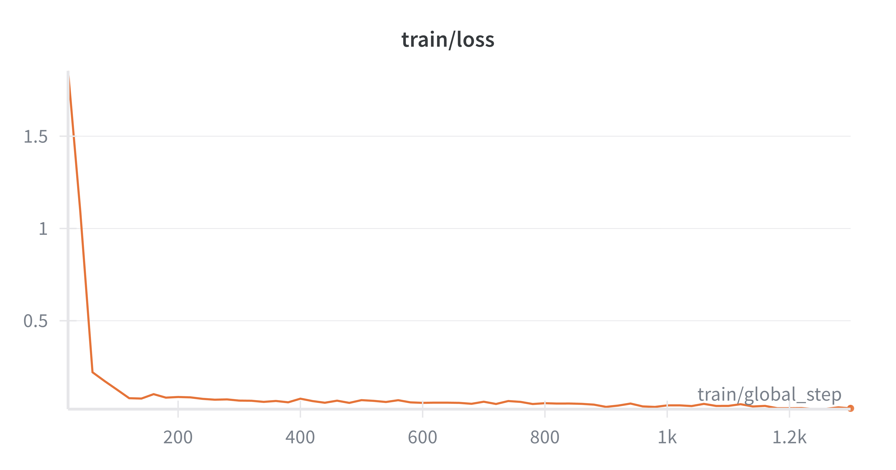
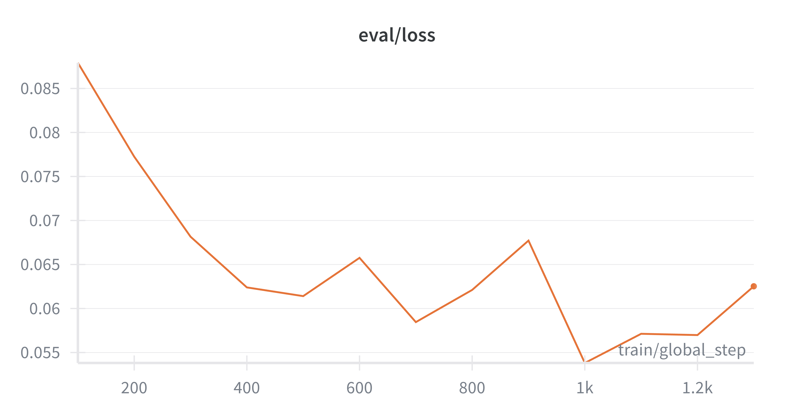

Goal: Engineering a multimodal agent to "hear" live OR audio directly (no ASR) and "see" surgery on consumer hardware (2× RTX 4090).
Quick Links: 📊 Data Distribution | 🎬 Streamlit Demo | 📈 Results
From Proof-of-Concept to Generalization
tool_identification represent only 3.7% of the data. Random splitting risked leaving these out of the validation set.create_multivideo_split.py) to ensure every category (e.g., Tools, Motion, Lesion) was represented in the 15% Eval split.occlusion_check.002-004) to test true clinical utility.src/app.py) with "Flipbook" animation to visualize temporal motion for clinicians.I used a portion of the SurgViVQA dataset [1], generating audio from the text questions using edge-tts to simulate a spoken-query audio.
| Split | Samples | Video IDs (Procedures) | Purpose |
|---|---|---|---|
| Train | 2,302 | 002-001, 002-002, 002-003 | Model Training |
| Eval | 398 | 002-001, 002-002, 002-003 | In-Training Validation |
| Test | 1,000 | 002-004 (held-out) | Generalization Testing |
| Total | 3,700 | 4 colonoscopy procedures | 20 question types |
Terminology: Each sample = 1 question + 8 consecutive frames + 1 answer. Video IDs refer to different colonoscopy procedures.
📄 See detailed breakdown: docs/data_distribution.md
Best Checkpoint: checkpoint-1000 (epoch 3.48, selected by early stopping)
| Metric | Eval Set | Test Set (Held-Out) |
|---|---|---|
| Overall Accuracy | 67.84% | 63.40% (634/1000) |
| Zero-Shot Baselines | - | 44-46% (text or audio) |
| Improvement | - | +17-19 points |
Baseline Comparison: We compared our end-to-end grafted model against a traditional two-stage pipeline (Whisper ASR → Text VQA).
Accuracy: Fine-tuning the audio-grafted model improved accuracy from ~46% (zero-shot) to 63.4%, matching the performance of text-based approaches while using raw audio.
Speed: By bypassing the intermediate text transcription step, our model achieves a 2.5× speed advantage over the ASR pipeline (1.07 vs 0.43 samples/sec), making it far more suitable for real-time surgical assistance.
📄 Baseline scripts: baseline1_text_image.py | baseline2_audio_image.py
Perfect Scores (100%):
| Question Type | Accuracy | Reason |
|---|---|---|
| blue_dye_presence | 100.0% (50/50) | Binary question, clear visual signal |
| endoscope_visibility | 100.0% (50/50) | Unambiguous visibility assessment |
| lesion_size_range | 100.0% (50/50) | All test samples <5mm (no variety) |
| lighting_mode | 100.0% (50/50) | All test samples NBI mode (no variety) |
| tool_catheter_check | 100.0% (50/50) | Binary tool presence |
| scope_outside | 98.0% (49/50) | Clear visual boundary detection |
Strong Performance (>75%):
| Question Type | Accuracy | Notes |
|---|---|---|
| occlusion_check | 84.0% (42/50) | Safety-critical, well-represented in training |
Moderate Performance (50-75%):
| Question Type | Accuracy | Challenge |
|---|---|---|
| tool_identification | 66.0% (33/50) | All test samples: forceps only (limited variety) |
| nbi_status | 56.0% (28/50) | Binary lighting mode detection |
| scope_forward_motion | 54.0% (27/50) | Temporal reasoning across 8 frames |
| mucosa_visibility | 52.0% (26/50) | Subjective visibility assessment |
| scope_backward_motion | 50.0% (25/50) | Motion direction (temporal) |
| scope_motion | 50.0% (25/50) | Binary motion detection |
Challenging Questions (<50%):
| Question Type | Accuracy | Root Cause |
|---|---|---|
| flush_action | 48.0% (24/50) | Subtle fluid motion detection |
| scope_motion_type | 46.0% (23/50) | 2-way classification (advancing/withdrawing) |
| lesion_histology_extended | 46.0% (23/50) | All test: hyperplastic (no variety) |
| fluid_occlusion_level | 44.0% (22/50) | 2-way classification (absent/complete) |
| lesion_site | 34.0% (17/50) | 2-way in test (sigma/rectum), limited training |
Hardest Questions (<25%):
| Question Type | Accuracy | Analysis |
|---|---|---|
| lesion_motion_direction | 20.0% (10/50) | 5-way classification, temporal modeling limitation |
| lesion_screen_position | 20.0% (10/50) | 4-way spatial reasoning (quadrant detection) |
✅ What the model does well:
⚠️ Where the model struggles:
Root causes:
📊 Full evaluation: Run evaluation script to generate detailed per-sample results
The architecture bypasses the standard ASR (Speech-to-Text) pipeline to reduce latency and error propagation, allowing the model to process raw audio embeddings directly alongside visual tokens.
graph LR
A[Audio Waveform] -->|Whisper Large v3| B(Audio Encoder)
B -->|Projector 1280->3584| C(Audio Tokens)
D[Surgical Frames] -->|Vision Encoder| E(Visual Tokens)
C & E --> F[Qwen2-VL Decoder]
F --> G[Answer]
q_proj, k_proj, v_proj, o_proj, MLP layers)-100), calculating loss only on the assistant's text responseI tracked training stability using Weights & Biases to ensure proper convergence without overfitting.
| Training Loss | Validation Loss (Eval) |
|---|---|
|  |  |
| Rapid convergence in first 200 steps | Optimal generalization at Step 1000 (Loss ~0.054) |
Analysis:
sdpa (Scaled Dot Product Attention) for quantization compatibility# Clone repository
git clone https://github.com/kulsoom-abdullah/SurgViVQA-Audio
cd SurgViVQA-Audio
# Create virtual environment
python3 -m venv venv
source venv/bin/activate
# Install dependencies
pip install -r requirements.txt
Running locally on 1x RTX 4090. Latency: ~1.2s per query.
Click the image above to watch the full 2-minute walkthrough.
To launch the interactive surgical VQA assistant:
streamlit run src/app.py --server.port 8501 --server.address 0.0.0.0
Features:
To reproduce the multi-video training run:
# Generate stratified train/eval/test splits
python3 create_multivideo_split.py
# Generate TTS audio (if not using pre-generated)
./generate_audio_multivideo.sh
# Run overnight training (8 epochs, early stopping)
./train_multivideo_overnight.sh
Expected: Training will stop around epoch 5-6 due to early stopping (patience=3).
Evaluate a trained checkpoint on the held-out test set:
python3 src/evaluate_checkpoint.py \
--checkpoint_path ./checkpoints/surgical_vqa_multivideo \
--eval_data_path test_multivideo.jsonl \
--frames_dir data/frames \
--audio_dir data/audio \
--output_file results/final_test_002004.jsonl
SurgViVQA-Audio/
├── src/
│ ├── train_vqa.py # Main training loop (QLoRA + audio grafting)
│ ├── app.py # Streamlit Demo (Interactive inference)
│ ├── evaluate_checkpoint.py # Standalone evaluation script
│ └── dataset.py # SurgicalVQADataset class
├── docs/
│ ├── demo_screenshot.png # for embedded video
│ ├── train_loss.png # W&B plot
│ ├── eval_loss.png # W&B plot
│ ├── data_distribution.md # detailed stats
│ └── data_stats.json # for Streamlit app
├── checkpoints/ # Saved LoRA adapters
│ └── surgical_vqa_multivideo/ # Best checkpoint (epoch 3.48)
├── data/
│ ├── frames/ # Extracted video frames (by video ID)
│ └── audio/ # Generated TTS audio files
├── scripts/
│ ├── train_multivideo_overnight.sh # Full training script
│ ├── generate_audio_multivideo.sh # TTS generation for 3 videos
│ └── create_multivideo_split.py # Stratified data splitting
├── analyze_data_distribution.py # Generate data stats (run anytime)
└── README.md
tool_identification (currently 75%, limited by resolution)I utilized the SurgViVQA dataset [1], converting the text questions to audio using edge-tts to simulate a spoken-query environment.
[1] SurgViVQA (2025) Drago, M. O., et al. "SurgViVQA: Temporally-Grounded Video Question Answering for Surgical Scene Understanding." arXiv preprint arXiv:2511.03325.
@misc{drago2025surgvivqa,
title={SurgViVQA: Temporally-Grounded Video Question Answering for Surgical Scene Understanding},
author={Mauro Orazio Drago et al.},
year={2025},
eprint={2511.03325},
archivePrefix={arXiv},
primaryClass={cs.CV}
}
A technical paper describing this project is currently in preparation. In the meantime, if you use this code or model, please cite the repository:
@software{abdullah2026surgvivqa,
author = {Abdullah, Kulsoom},
title = {SurgViVQA-Audio: Audio-Grafted Qwen2-VL for Surgical Video QA},
year = {2026},
publisher = {GitHub},
journal = {GitHub repository},
url = {[https://github.com/kulsoom-abdullah/SurgViVQA-Audio](https://github.com/kulsoom-abdullah/SurgViVQA-Audio)}
}
This project is licensed under the Apache 2.0 License.
You are free to use, modify, and distribute this software, provided that proper credit is given (see Citation above).
Built with: PyTorch, Transformers (custom fork), PEFT, Streamlit, Librosa, Edge-TTS